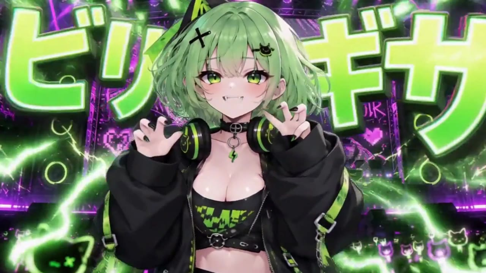
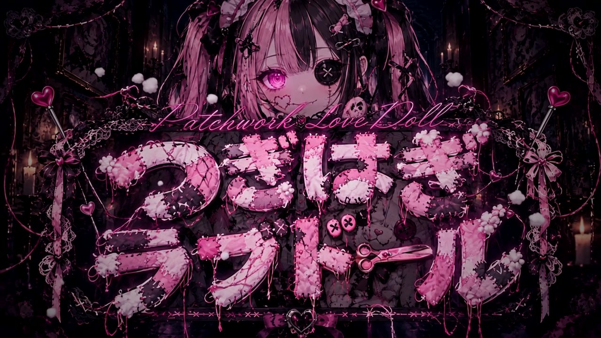
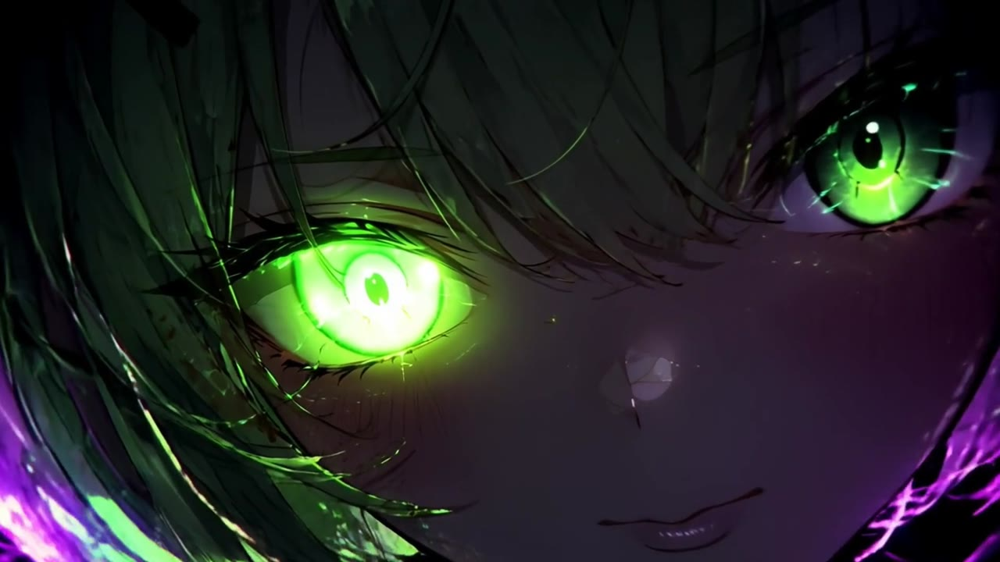
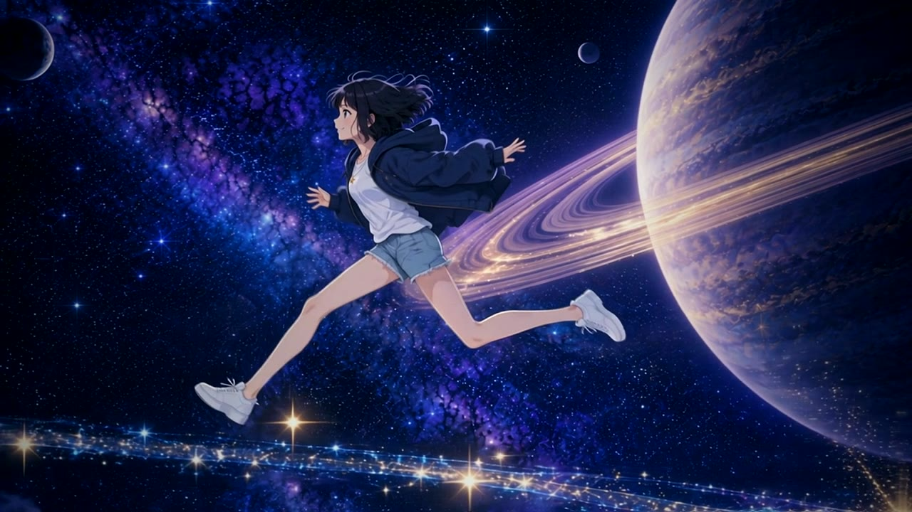

WORKS 01 ／ サイバーポップ
感電♡シンドローム
ネオンと電脳空間の電波系ポップ。画面いっぱいの歌詞タイポとビート連動のグリッチで、中毒性のあるテンポに仕上げました。
尺 3:13 ／ 歌詞タイポ・グリッチ演出
WORKS
ジャンルも絵柄もまったく違う3本。曲の世界観から映像の作り方を変えています。
USE CASES
映像・画像・音楽まで、生成AIで作れるものは基本的にすべてお受けしています。ここにない内容もお気軽にご相談ください。
楽曲の世界観に合わせたフルサイズのミュージックビデオ。
オリジナルソング＋アニメ映像で、記憶に残るブランド動画に。
お持ちのキャラクター設定画から、歌って動く映像を制作。
縦型1080×1920のショートで、サビの一番いいところを切り出し。
会社の想いや働く人の魅力を、ストーリー仕立てのアニメで伝えます。
ライブ、セミナー、配信の幕開けを盛り上げるオープニング映像やジングル。
キャラクターが案内する、わかりやすくて覚えてもらえる説明動画。
キャラクターデザイン、サムネイル、タイトルロゴ、オリジナル曲だけのご依頼もOK。
WHAT WE DO
作詞・作曲、キャラクターと背景、各カットの映像化、編集・書き出しまでワンストップ。曲がない状態からでも始められます。
AI特有の崩れ・カクつきをコマ単位で確認し、気になるカットは作り直し。歌詞やビートに合わせて切り替えを調整します。
YouTube用1080pの本編に加え、縦型ショート、サムネイル、概要欄の文面まで用意。公開後すぐにSNSで展開できます。


FLOW
STEP 1
用途・尺・雰囲気・参考動画をうかがいます。
STEP 2
曲の制作・解析をして、カット割りの構成表を作ります。
STEP 3
キャラクター設定画と場面ごとの背景をご確認いただきます。
STEP 4
1カットずつ生成し、品質を確認しながら進めます。
STEP 5
ビートに合わせて編集し、本編・ショート・サムネを納品。
PRICE
作画・背景・演出・歌を生成AIで作るので、作画スタッフや撮影、スタジオの費用がかかりません。そのぶんを価格に還元し、一般的な個人への依頼よりも安く、制作会社の数分の一の価格でお届けします。
SHORT
〜30秒
20,000円〜
一般的な相場：個人 1〜5万円／制作会社 10〜60万円
納期 約1週間〜
縦型または横型1本。構成・映像生成・テロップ・BGM・書き出しまで。
PROMOTION
〜60秒
40,000円〜
一般的な相場：個人 5〜10万円／制作会社 30〜100万円
納期 約2週間〜
企画・構成、キャラクター・背景、映像化、編集。ロゴ入れ・キャッチコピー込み。
FULL MV
3〜4分
100,000円〜
一般的な相場：個人 10〜30万円／制作会社 40〜200万円
納期 約3〜4週間〜
構成表・全カット制作・歌詞タイポ・編集。縦型ショート1本とサムネイル付き。
FAQ
気になる質問をタップすると答えが開きます。
はい、基本的になんでもお受けしています。広告・PR動画、商品やサービスの紹介動画、企業紹介・採用動画、イベントや配信のオープニング、SNS用ショート、キャラクターデザイン、イラスト、ロゴ、オリジナル曲・BGM・ジングルなど、生成AIで作れるものはまずご相談ください。「こういうのはできる？」という段階からで大丈夫です。
はい。法人・個人を問わずお受けしています。アーティスト、VTuber、店舗、スタートアップなど、規模に関係なくご相談ください。
もちろんです。目的（何に使うか）とおおまかな雰囲気だけ教えていただければ、構成・尺・表現方法をこちらからご提案します。参考にしたい動画やURLがあれば一緒にお送りください。
はい。作詞・作曲から対応します。既にある楽曲に映像だけを付けることもできますし、逆に曲だけのご依頼もお受けしています。
用途、希望の長さ、雰囲気がわかるもの（参考動画・画像など）があればスムーズです。楽曲、ロゴ、キャラクター設定画、商品写真などをお持ちならお送りください。揃っていなくても進められます。
はい。尺・カット数・曲制作の有無を調整して、ご予算の中でいちばん効果が出る内容をご提案します。まずはご予算感をお聞かせください。
サイバーポップ、ホラー寄りのかわいい系、エモーショナルなショートドラマなどの実績があります。ほかのジャンルや絵柄も、参考を見せていただければ合わせて制作します。
アニメ調が得意ですが、実写風の映像やリアル寄りの表現もご相談いただけます。用途に合うテイストをご提案します。
キャラクターの設定画をお送りいただければ、その絵柄・服装に合わせて映像を作ります。キャラクターデザインからのご依頼も可能です。
はい。15秒・30秒の広告尺から、3〜4分のフルサイズMVまで対応しています。1本の動画から長さ違いや縦型版を作ることもできます。
はい。ロゴの常時表示、オープニング・エンディングへのロゴ演出、キャッチコピーや説明テロップ、歌詞タイポグラフィなど、目的に合わせて入れられます。
英語などの歌詞・テロップ・概要欄もご相談ください。海外向けの展開を想定した制作も可能です。
構成、キャラクター・背景、映像の各段階でご確認いただき、修正を反映しながら進めます。完成後の修正は2回まで無料です。それ以降の修正や、方向性が大きく変わる変更は別途お見積りします。
尺・カット数・曲制作の有無などに応じてお見積りします（お見積り無料）。目安は、ショート（〜30秒）20,000円〜、PR・紹介動画（〜60秒）40,000円〜、フルサイズMV（3〜4分）100,000円〜です（税別）。生成AIで制作するため、一般的な個人への依頼の相場よりも抑えた価格にしています。ご予算に合わせた内容のご提案もできます。
ショートは約1週間〜、PR・紹介動画は約2週間〜、フルサイズMVは約3〜4週間〜が目安です（内容確定後の日数）。公開日が決まっている場合やお急ぎの場合は、最初にお知らせください。
お支払い方法や時期は、お見積りの際に個別にご案内します。法人のお客さまの請求書対応などもご相談ください。
1080pのMP4（本編）と、縦型1080×1920のショート動画が基本です。サムネイル画像やYouTube概要欄の文面もお付けできます。ほかの解像度・形式もご相談ください。
商用利用を前提に、各生成AIサービスの商用利用が認められたプランで制作します。著作権・利用範囲の扱いはご契約時に明記します。
はい。タイトル・概要欄の文面、サムネイル、AI生成コンテンツの開示設定のポイントまでまとめてお渡しします。公開後のショート展開もご相談ください。
ここにない内容も、まずはお気軽にご相談ください。
無料で相談する
ご相談・お見積りは無料です。価格や納期、制作の進め方は内容を伺って個別にご案内します。貴社の業務や用途に合わせた内容のご提案も可能です。
ご相談の際にお知らせください（わかる範囲でOK）
AICポートの作品ページが開きます。「相談する」ボタンから公式のお問い合わせフォームへお進みください。
作品名「AIアニメMV制作」とこのページのURLを添えてご連絡ください。